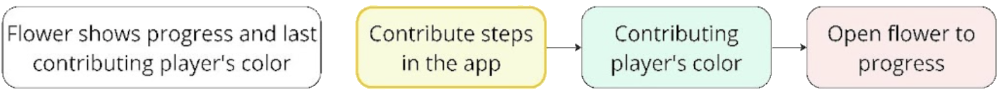
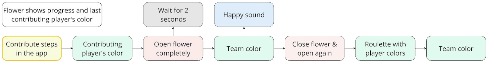
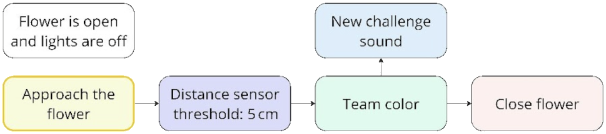
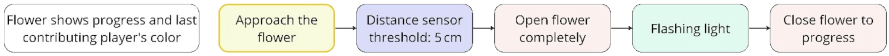

Duration: 16 weeks
My Roles: UX researcher, UX designer, creative technologist
In the fall and winter of 2023/2024, I participated in the HCI Industry Project course of my master's program. Together with Lukas Dommershausen, Riccardo Longo, and Eva-Maria Strumegger, we collaborated with the Ludwig Boltzmann Institute for Digital Health and Prevention (LBI) to enhance their research prototype Shared Achievements, a collaborative step-counter app designed to promote physical activity. Over the course of four months, we examined the existing system, ideated new interface and interaction concepts, and designed both a new screen-based visualization and a physical prototype tailored for office environments. We refined our prototype through iterative feedback from stakeholders and produced a final demo video.
PROBLEM
The original visualization of step-tracking progress was lacking
The original Shared Achievements app developed by the LBI gamified physical activity through collaborative step tracking. Players contributed daily steps to climb a virtual mountain together, and there was a feature for sending encouraging messages to either select members or the entire team. However, the original mountain metaphor led to misconceptions—many believed they needed to literally walk uphill to make progress. Our challenge was to design and implement more intuitive, motivating representations of team progress that would better suit an office setting and increase social accountability.
SOLUTION
Implement a flower that blossoms through teamwork
We developed a system that extended the existing Shared Achievements step-counter app by adding a redesigned mobile visualization and a physical prototype: an interactive flower designed for shared office spaces. As team members logged their steps, the flower would gradually open, visually reflecting the team’s collective progress. It also responded to individual contributions by glowing in the contributor’s color and supported additional interactions such as checking progress, resetting the challenge, and shaking the flower to send motivational messages. These interactions were iteratively refined through user feedback, resulting in a socially expressive interface that externalizes progress and fosters teamwork in a low-effort, ambient way.
PROCESS
Design through research, prototyping, and co-creation
Our process began with an in-depth review of LBI’s ongoing research on the existing app, followed by two weeks of hands-on experience using it. Building on these insights, we generated and discussed various visualization metaphors using moodboards—including wall clocks, puzzles, and marbles—ultimately selecting the concept of a blooming flower. We prototyped the flower using 3D printing and Arduino while developing complementary mobile interfaces using Figma and React Native. Feedback from a co-design workshop with stakeholders informed the refinement of the final interaction set of the flower, which we then implemented.
INTERACTIONS
Turn steps into shared moments
We transformed individual step counts into tangible, ambient interactions that subtly encouraged collective engagement. Through five carefully designed behaviors using light, motion, and gesture-based feedback, we aimed to externalize progress in a way that felt both intuitive and socially meaningful. Rather than demanding attention, the prototype served as a quiet presence in the office, gently reinforcing shared effort. Over time, its gradual blooming became a small but recognizable ritual of teamwork. We designed the following five final interactions:
-
1. Contributing Steps: The flower lights up in the player’s color and opens slightly more, visually marking progress.
 -
2. Reaching the Goal: A celebratory melody plays as the flower opens fully, displays team colors, and stays open.
 -
3. Resetting the Challenge: A close-range gesture resets the flower and starts a new challenge after briefly showing the team color and playing a sound.
 -
4. Checking Status: Approaching the flower temporarily forces it open with a flashing light, allowing for a quick progress check.
 -
5. Sending Motivation: Shaking the flower triggers a confirmation sound and sends a motivational message to the whole team.
FINAL PROTOTYPE
Bring the concept to life
From awkward curiosity to enthusiastic team pride, this video demonstrates how our prototype evolved into a small but meaningful part of the team’s week.
A detailed report of this project can be further read here.
CONCLUSION & LESSONS
Lessons learned
1. Design decisions should consider feasibility early on.
The blooming flower metaphor was well-received, but implementing it involved technical constraints we had not fully anticipated. Some of the Arduino components, such as the servo motor required for the flower's movement, were difficult to find and integrate; working around these limitations cost us significant time. In future projects, I will carefully evaluate technical feasibility earlier in the design process to ensure that promising ideas can be implemented with the available resources.
2. Ongoing stakeholder feedback enhanced design quality.
One of the most helpful aspects of this project was our ongoing dialogue with the LBI. Instead of saving feedback for the end, we shared ideas regularly and made room for iteration along the way. The LBI's input was helpful and challenged us to think critically, keeping our work grounded while giving us room to be creative. Overall, I am incredibly thankful for the LBI's support.
3. Clear, iterative milestones support better team alignment.
Early on, we outlined a broad project timeline, but we did not break tasks down as much as we should have. This became especially clear during the 3D printing phase, where there were unforeseen delays. In future projects, I plan to set shorter, clearer goals and revisit them regularly to help my team stay aligned and adaptable.
4. Real user engagement revealed what we could not predict alone.
Our stakeholder workshop made a real difference. Watching participants interact with the prototype revealed subtle usability issues we had not noticed. It also gave rise to entirely new ideas, like the “shake-to-send-encouragement” interaction. This experience reminded me how essential it is to involve real users early in the design process—not only to validate ideas, but also to uncover possibilities we might not have imagined on our own.
MORE PROJECTS